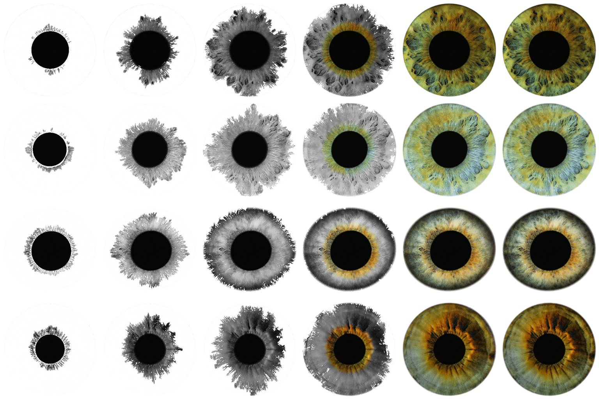
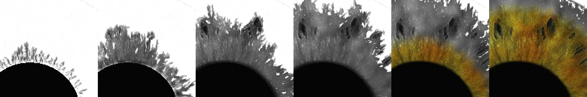

Drawing an Iris: An Automaton for Any Rendering
A picture of an iris can be drawn the way an iris grows: strands out of the pupil's edge first, then the tissue between them, the crypts, the colour, the light. This paper defines a cellular automaton with local rules that does that for any rendering of the Iris Engine, proves that it always ends on the rendering itself, and runs it live on every fitted eye.
1Jorik Jonathan Chase, 3DIE — Design, Art & Technologies Label. A draft in the series, in preparation (its number, 0.5 or a chapter of 0.4, is not decided). November 2026.
The paper in one paragraph
The Iris Engine turns one fitted eye file into a picture through a long pipeline: curves baked into tissue textures, a ray marched through a cornea into a relief, lighting, 256 accumulated samples, a tone curve, and, close up, a generator of fibres below the photograph (chapter 1). We define A(eye, t), a cellular automaton on the picture's own pixels whose cells read only their eight neighbours. Each cell lays down a stack of stages — strands, stroma, crypts, pigment, relief, the final frame — whose differences telescope, so that once every stage is down the picture is the rendering (chapter 2). The order in which cells fire comes from the eye's anatomy: anisotropic fronts that run along the fitted strands from the pupil margin, wash sideways from them, fill crypts from their rims. We prove that every cell fires in finite time (with an explicit bound), that the end state equals the rendering exactly, and that the rule is local and the same for every eye (chapter 3); on all four fitted eyes it ends in 763–778 steps with an error of 0 levels and no causality violation (chapter 4). The reader can run it, scrub time, switch stages off and inspect any cell.
Status: draft. Every figure marked live runs the same module as the measurements
(papers/iris-automaton/automaton.js).
1. From the Eye File to the Pixel
Before drawing a rendering, know what made it.
An eye file holds no colours and no pixels. It holds the fit (the pupil and limbus in the photograph), the traced strands at two levels — the deck's fibres and veins, the sheet's guides and fine fibres — the crypt outlines and their relief, the collarette and margin, a lattice of 9,000 material cells, and the measured light. Every colour is regenerated from five pigment numbers per curve and cell. The engine's work then runs in three tiers.
| tier | pass | reads | writes | scale |
|---|---|---|---|---|
| once per eye | curve passes (fibres, floating, veins, guides, sheet fibres, sheet veins, outlines) | the traced curves, mapped to tissue (u, v) | the nearest curve per texel: its albedo and its distance, width | tissue texels, τ ≈ 6 µm (6144 round the eye) |
| fill | crypt outlines | inside each crypt (winding) | ||
| pack | the above + de-light | height, fill, rim | ||
| compose (4 targets) | everything above | albedo; height + sheet coverage; floating strands top/bottom; their albedo — mipmapped | ||
| every sample | photo pass | the tissue textures, camera, light | cornea hit, Fresnel, refraction into the aqueous; a parallax march through the relief (10 steps + 4 bisections) with floating-strand tests; normals; caustic; self-shadow march; albedo × a lognormal micro-texture; subsurface light, translucency, sheen | canvas pixels (≈ 18 µm at the start view) |
| accumulation | the previous mean | running mean; converged at 256 samples (normal quality) | canvas | |
| post | the mean | bloom, exposure, saturation, ACES, gamma, a film grain, over white | canvas | |
| close up | fly-down generator | the eye's seed, steering, phasor and grain fields | 128² pages of detail, grain, strand height and fibre angle, 4 → 0.25 µm per texel | below the photograph |
| fly-down variant of the photo pass | the pages | albedo × eD, micro-relief, sheet ridges, crypt bridges | wherever a pixel resolves half a fibre |
The full map, pass by pass with its inputs, its switches and the engine's test hooks, is in
papers/iris-automaton/PIPELINE.md. Two facts from it shape the automaton. First, a rendering is not a
sum of passes: lighting multiplies albedo, the march moves where albedo is read, the tone curve bends all of it. No
decomposition into additive layers exists inside the shader. Second, the engine can render itself with parts
switched off — no relief (state.relief = 0), no fly-down (F.on = false) — and each such
render is a complete picture. The automaton is built on complete pictures.
2. The Automaton
Seven pictures of the same eye, from the empty page to the rendering, and a rule for when each cell may move from one to the next.
2.1 Stages
Let L0, …, LK be pictures of the eye on the same pixel grid, with L0 the white page and LK the rendering to be drawn. Here K = 6:
| k | stage | picture | from |
|---|---|---|---|
| 0 | page | white | — |
| 1 | strands | graphite ink: the pupil, and the grey of L4 along the strand crests | L4 through the eye file's anatomy |
| 2 | stroma | a graphite wash between the strands (grey of L4, blurred 3 px), crypts still bare | |
| 3 | crypts | the crypt floors drawn in grey | |
| 4 | pigment | colour: the engine with no relief and no fly-down — the layer model's de-lit photo colour, lit flat | the engine itself |
| 5 | relief | the engine with its relief: parallax, self-shadow, subsurface | |
| 6 | final | the engine as it ships, fly-down strands included where the view resolves them |
The anatomy at each pixel comes from the eye file alone: the strand tangent θ (the structure tensor of every traced curve), a crest value c (the traced curves drawn as ink, with the bright ridges of L4 across θ added for the strands the tracer left out), the crypt value q (a smoothstep of the signed distance to the crypt outlines), the radius ρ from the pupil margin (0) to the limbus (1), and the iris and pupil masks.
2.2 State and picture
Every cell x holds, for each stage k = 1 … K, a charge ek(x), a firing time fk(x) and a deposit ak(x) ∈ [0, 1]. The picture is
O(x, t) = L0(x) + Σk ak(x, t) · (Lk(x) − Lk−1(x))
(times a wet-rim darkening 1 − Σ wk·4ak(1 − ak), which is 1 whenever every deposit is 0 or 1: the print's wet front).
2.3 Rules
Time runs in steps. Every cell is updated from the previous step's state of itself and its eight neighbours N(x). For stage k, a cell that has not fired:
- Schedule. waits until t ≥ sk (one global clock, the same for every cell);
- Gate. waits until the stage below is laid down to gk here: ak−1(x) ≥ gk;
- Source. fires at once if its anatomy matches the stage's source (the pupil margin, a crest, a crypt's rim);
- Spread. otherwise charges from its fired neighbours, ek += Δt · maxn ∈ N(x), fired vk(x) · φk(x, n) / |n − x|, and fires when ek ≥ 1. The speed is vk = v0 · J · max(vmin, b + wcc + wqq), with the cell's own jitter J = 1 + j(2h − 1) from a hash h of its position; the direction factor φ = (cos² + α² sin²)−½ of the step's angle to θ makes the front α times slower across the strands than along them;
- Ember. fires by itself once it has waited Pk(1 + h) since its gate opened — a place the fronts cannot reach is still drawn;
- Deposit. once fired, ak = clamp((t − fk) / Dk, 0, 1).
A stage may also have a domain (the eye, the iris, the crypts): cells outside it take the stage at once — their difference Lk − Lk−1 is zero by construction — and are never a front's source.
| stage | sk | gk | source | speed | α | j | D | P |
|---|---|---|---|---|---|---|---|---|
| strands | 0 | 0 | pupil; iris at ρ < 0.02 | 1.0 · max(0.03, 0.06 + 1.6c) | 3.5 | 0.45 | 10 | 260 |
| stroma | 70 | 0.6 | crest c > 0.55 | 0.45 · max(0.1, 1 − 0.8q) | 0.55 | 0.35 | 16 | 120 |
| crypts | 150 | 0.85 | crypt rim q < 0.25 (domain q > 0.04) | 0.35 | 1 | 0.3 | 14 | 80 |
| pigment | 210 | 0.9 | iris at ρ < 0.03 | 0.9 · max(0.15, 1 + 0.6c − 0.5q) | 1.8 | 0.6 | 22 | 220 |
| relief | 330 | 0.8 | iris at ρ < 0.03 | 1.6 | 1.2 | 0.2 | 26 | 200 |
| final | 420 | 0.8 | iris at ρ < 0.03 | 1.2 · max(0.2, 0.35 + c) | 3.0 | 0.5 | 18 | 200 |
Strands run along the crests from the pupil's edge, uneven because every cell has its own speed; the wash spreads sideways from each inked strand (α < 1: faster across than along); crypt floors fill from their rims inward; colour bleeds out from the pupil margin along the strands and slower through crypts; the light rakes out after it; the fine strands grow last.
What fired: source a neighbour the ember outside the stage
3. Proofs
Theorem 1 (it ends). Every cell fires in every stage by a finite time. With F0 = 0 and
Fk = max(sk, Fk−1 + gk Dk−1) + 2Pk,
every fk(x) ≤ Fk, and every deposit is complete by Tend ≤ FK + maxk Dk.
By induction on k. A cell's gate for stage k opens at the first step with t ≥ sk and ak−1(x) ≥ gk. Deposits grow linearly after firing, so ak−1(x) reaches gk by fk−1(x) + gkDk−1 ≤ Fk−1 + gkDk−1 (for k = 1, a0 ≡ 1). Once the gate is open, nothing can stop the ember: the cell fires after at most Pk(1 + h) < 2Pk, unless a source or a neighbour fired it sooner. Cells outside a stage's domain fire at once. So fk(x) ≤ Fk, and Dk later ak(x) = 1. ∎
With the parameters above, F = 520, 766, 939.6, 1392.2, 1809.8, 2230.6, so Tend ≤ 2257 steps for any eye. The measured ends are 763–778 (chapter 4): the fronts, not the ember, do the drawing.
Theorem 2 (it ends on the rendering). For t ≥ Tend, O(·, t) = LK, the rendering, at every pixel.
At Tend every ak = 1, so every wet factor is 1 and the sum telescopes: L0 + Σk (Lk − Lk−1) = LK. Deposits never decrease, so it stays there. In floating point the sum of K = 6 differences of values in [0, 1] carries a rounding error below 10−6, far under half an 8-bit level, so the 8-bit picture equals the rendering's bytes. ∎
Nothing here needs the stages to be additive, physical or even related: the theorem holds for any pictures L1 … LK−1. They decide only what the drawing looks like on the way. Nor is the error on the way guaranteed to fall: a graphite stage may sit further from a pixel's colour than the paper did. On the four eyes the mean error never rose between two measurements (figure 2), but that is a property of these stages, not of the rule.
Theorem 3 (it is local). The state of x at step t + 1 depends only on the state of x and of N(x) at step t, on x's own fixed data (its stage values, anatomy and hash), and on t. A cell fired by spread has a neighbour that fired strictly earlier.
Read off the rules: the schedule reads t; the gate, source, ember and deposit read x's own state and data; the spread reads the neighbours' fired flags and x's own direction factors. Firing by spread needs a positive charge, which only a fired neighbour (from the previous step) gives; the firing time is interpolated inside the step in which the charge crossed 1, after that neighbour's. ∎
So a drawing front moves at most one cell per step, and the picture at any cell can be explained by a chain of neighbours back to a source or an ember — the inspector in figure 1 shows that chain one link at a time. The runner checks the second sentence on every cell of every stage of every eye.
Generality. The rules are the same for every eye: their numbers are in pixels and steps, and read the eye only through c, q, θ, ρ and the masks, which every fitted eye file provides. The stages L4 … L6 are any renders of that eye at that pose, and LK can be any rendering at all — Theorems 1 and 2 do not look at what the pictures show. What is specific is the pose: the anatomy is mapped to the pixels of the start view (a similarity, the render's iris circle onto the fit's limbus). For any other view, the engine already computes the map from each pixel to tissue (u, v) (its debug view 14, used by the print), and the same fields can be read through it.
4. Measured on Every Fitted Eye
Four eyes, the same rules, the same seed.
Each eye was loaded in the engine on its shipped measurements and rendered at the start view (1800 px canvas, 256
samples, normal quality) three times — as it ships, without the fly-down, and without relief either — and cropped
to 384 px round the iris (≈ 31–32 µm per pixel). Eyes 35 and 25 get no fly-down strands at this canvas size (their
fibres are finer than the view's threshold), so their last stage adds nothing: a stage that is empty is handled like
any other. The runner (tools/iris-automaton/run.mjs) steps the automaton to its end and measures
|O − L6| every 10 steps.
| eye | Tend | final error on the eye, mean / max (levels) | causality violations | cells fired by the ember | ms per step (Node, 384²) |
|---|
The ember fires 0.36–0.54 % of all cell-stages. On the page round the eye it fires in the far corners, where the colour's and the last stage's fronts arrive late (170–2,200 cells per stage); on the eye it fires in the strand stage, 136–839 cells (0.2–1 % of the eye) between strands that no crest front reached before their patience ran out, and in at most 17 cells of the last stage. The iris is drawn by its fronts. Changing the seed (3, 7, 11) moves Tend by under 10 steps and leaves the final error at 0; running twice as fast (all speeds × 2, the schedule ÷ 2) ends at 572 steps, also at 0.


5. Where It Sits
Growing an image with a cellular automaton is not new: neural cellular automata learn a local update rule whose attractor is a target image [1]. Theirs is learned and approximate; this one is written by hand, reaches its target exactly and in bounded time, and is steered by an anatomy instead of by training. Its fronts are a discrete, anisotropic eikonal solver [2] run as an excitable medium [3]; the ember is the spontaneous ignition of the forest-fire model [4], used here only as a guarantee. Drawing a given picture in an order that reads as making it — strokes coarse to fine along the image's own structure — is the programme of stroke-based rendering [5] [6]; laying pigment down cell by cell along an anatomy is Neri Oxman's group's voxel printing [7], which the engine's print (paper 0.4, chapter 1) already follows.
The print and the automaton are close relatives. The print computes one arrival time per pixel in a shader, from strands traced back to the pupil margin, and sharpens the real frame behind it; the automaton computes its arrival times with a local rule and lays down several stages, each a different picture. The automaton's firing times for the strand stage could feed the print as its arrival field, and its stage stack could replace the print's single blur-to-sharp step; the rule is local, so it ports to a fragment shader as one ping-pong pass per stage.
Limits
- One pose: the anatomy is mapped to the start view. Other views need the engine's per-pixel (u, v) map; the rules do not change.
- The stages are captured, not computed live: three engine renders per eye (≈ 3 s each here).
- The graphite stages are drawn from the flat render through the anatomy; another artist's order (colour first, light first) is a different stage list, and the theorems still hold.
- On the CPU at 384² a step costs ~5 ms; at the canvas's full size it belongs on the GPU.
References
- A. Mordvintsev, E. Randazzo, E. Niklasson, M. Levin. Growing neural cellular automata. Distill, 2020.
- J. A. Sethian. A fast marching level set method for monotonically advancing fronts. PNAS 93(4), 1996.
- J. M. Greenberg, S. P. Hastings. Spatial patterns for discrete models of diffusion in excitable media. SIAM J. Applied Mathematics 34(3), 1978.
- B. Drossel, F. Schwabl. Self-organized critical forest-fire model. Physical Review Letters 69, 1992.
- P. Haeberli. Paint by numbers: abstract image representations. SIGGRAPH 1990.
- A. Hertzmann. Painterly rendering with curved brush strokes of multiple sizes. SIGGRAPH 1998.
- C. Bader, D. Kolb, J. C. Weaver, S. Sharma, A. Hosny, J. Costa, N. Oxman. Making data matter: voxel printing for the digital fabrication of data across scales and domains. Science Advances 4(5), 2018.